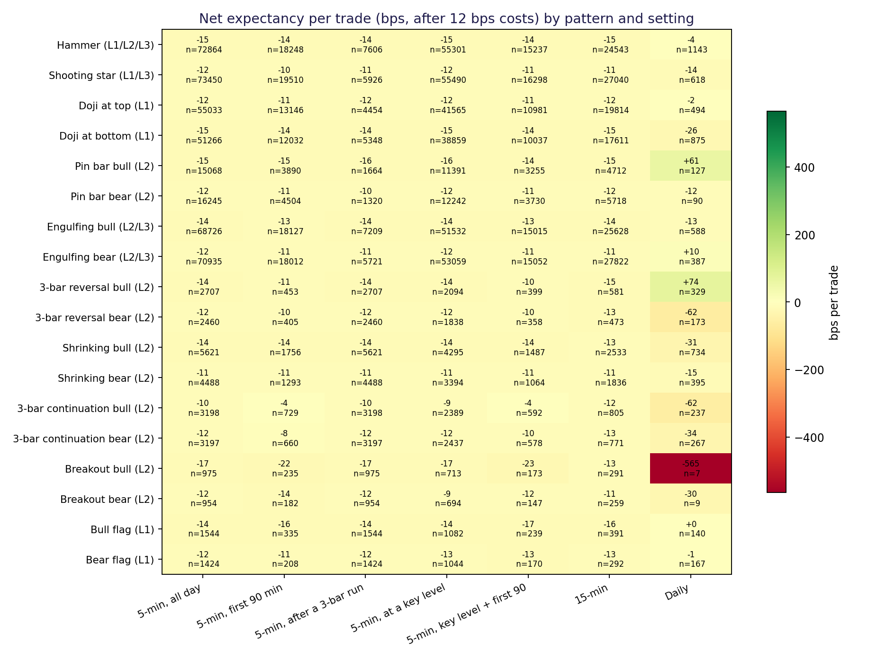
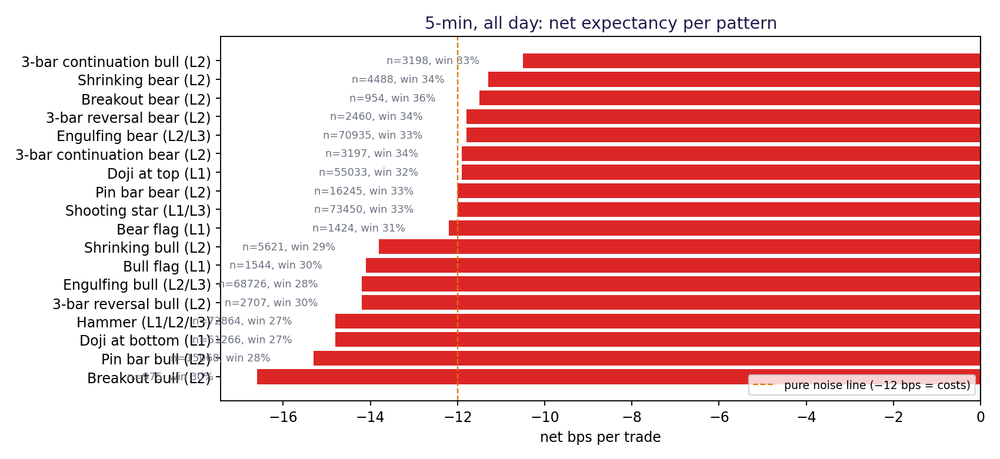
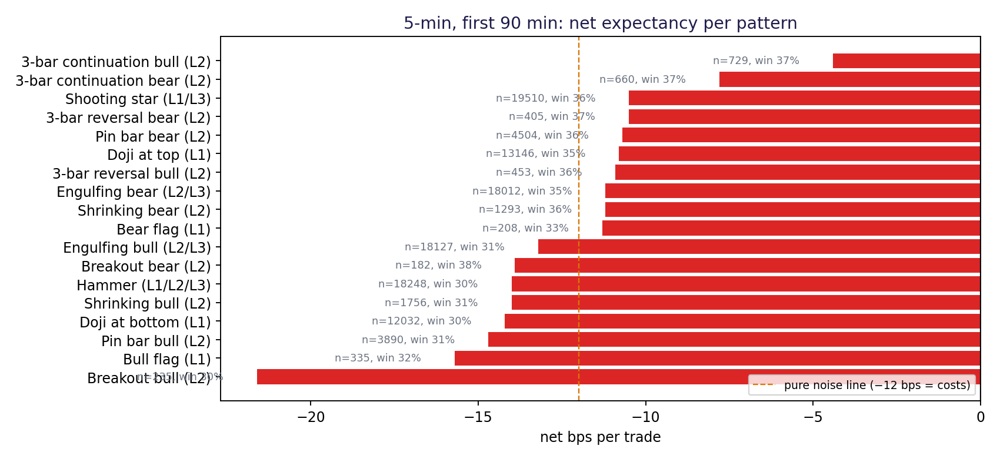
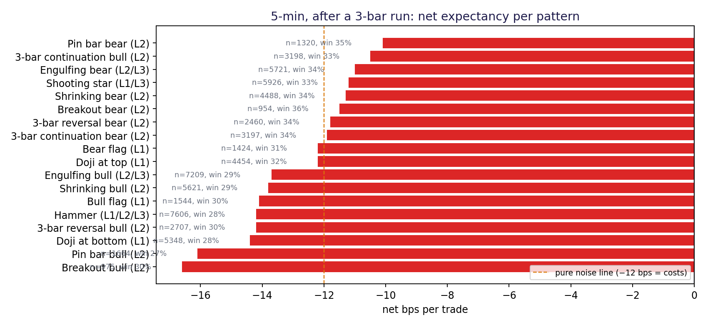
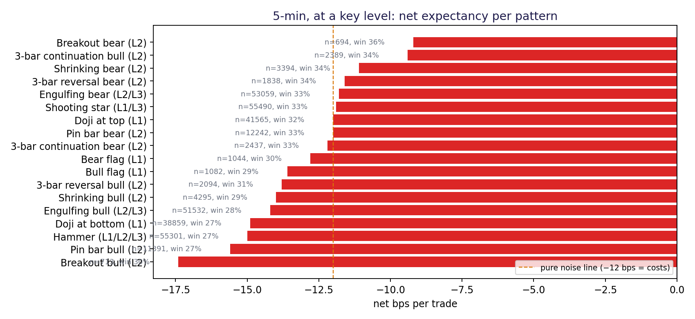
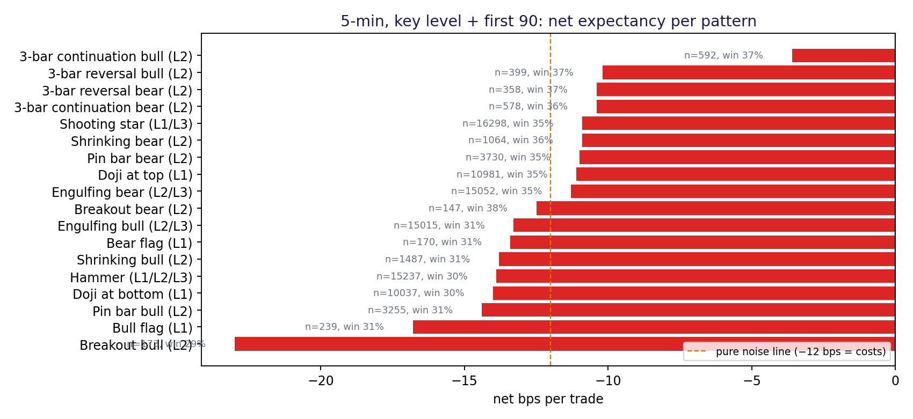
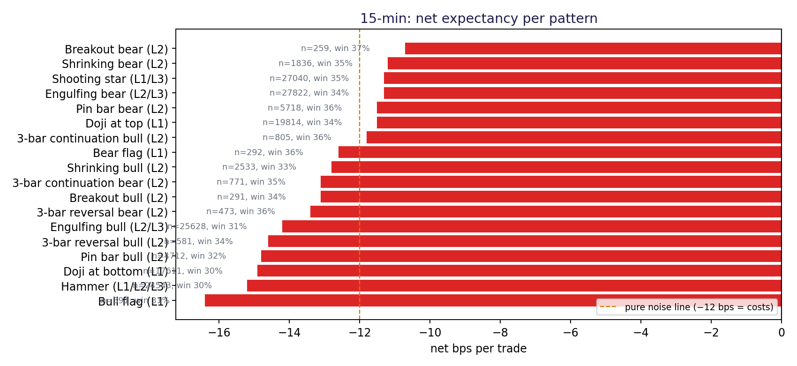
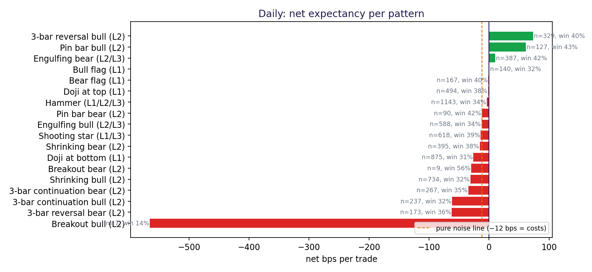
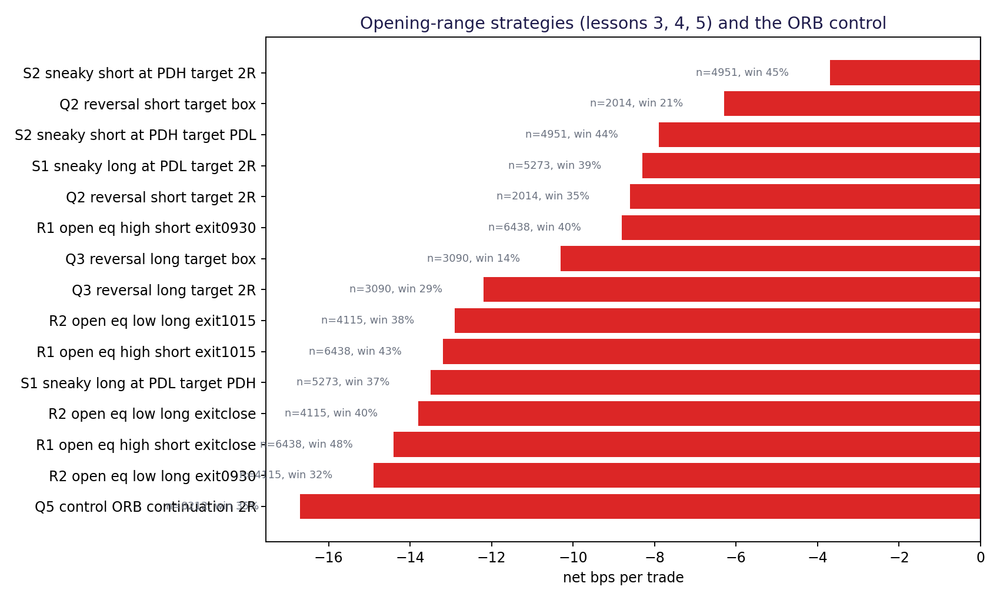
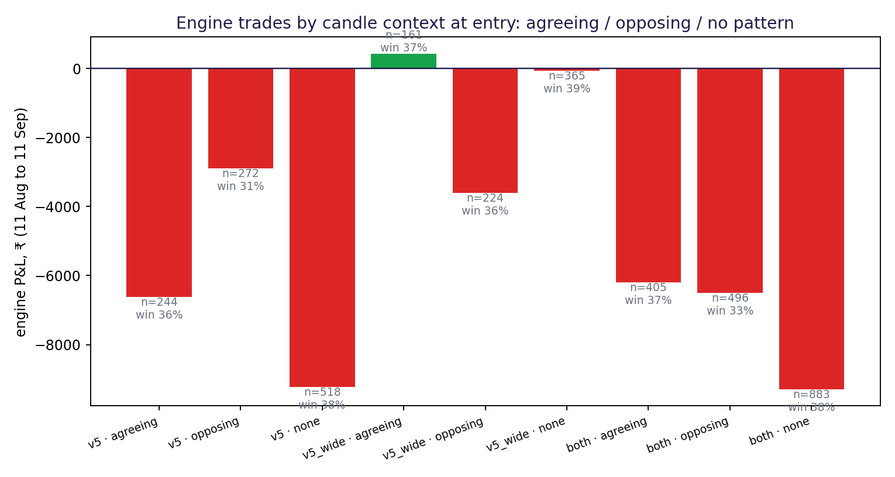

What the videos teach, where they agree, and what each rule actually earned on 399 NSE stocks over 45 sessions (13 Jul to 11 Sep 2026), plus what it would have done to the engines' own trades.
Soumya Swain · Surya AI · 2026-09-12 · v1.0
| pattern | setting | n | win | avg R | net bps |
|---|---|---|---|---|---|
| 3-bar reversal bull (L2) | Daily | 329 | 40% | +0.09 | +73.5 |
| Pin bar bull (L2) | Daily | 127 | 43% | +0.08 | +61.4 |
| Engulfing bear (L2/L3) | Daily | 387 | 42% | +0.12 | +10.2 |
| Bull flag (L1) | Daily | 140 | 32% | -0.08 | +0.4 |
| Bear flag (L1) | Daily | 167 | 40% | +0.10 | -1.0 |
| Doji at top (L1) | Daily | 494 | 38% | +0.04 | -1.5 |
| 3-bar continuation bull (L2) | 5-min, key level + first 90 | 592 | 37% | +0.06 | -3.6 |
| Hammer (L1/L2/L3) | Daily | 1143 | 34% | -0.07 | -3.6 |
4 of 123 pattern-and-setting pairs are net positive, all on daily bars. "bps" is basis points of price per trade after 12 bps round-trip costs; 10 bps on a ₹1,00,000 position is ₹100.
| pattern | setting | n | win | avg R | net bps |
|---|---|---|---|---|---|
| Doji at bottom (L1) | Daily | 875 | 31% | -0.14 | -26.0 |
| Shrinking bull (L2) | Daily | 734 | 32% | -0.11 | -31.0 |
| 3-bar continuation bear (L2) | Daily | 267 | 35% | -0.10 | -34.4 |
| 3-bar continuation bull (L2) | Daily | 237 | 32% | -0.21 | -61.5 |
| 3-bar reversal bear (L2) | Daily | 173 | 36% | -0.05 | -62.0 |
All five teachers, in different words, say the same four things. A wick is the message: a long lower wick means buyers absorbed a dip, a long upper wick means sellers rejected a high. A reversal candle is a signal, not an entry; the next candle must confirm by breaking the reversal candle's extreme. Location beats shape: the same candle means nothing inside a range and everything at a level or the end of a run. The stop goes behind the structure, and the target is about twice the risk or the far side of the structure.
Is the opening move a trap or the truth? Lesson 3 and lesson 4 say the first 15-minute candle is engineered liquidity that gets reversed; trade against it once a reversal candle prints outside the range. Lesson 5 says the first minute's direction holds for 15 minutes; trade with it and leave at 09:30. Timeframe: lesson 1 works on 1- and 5-minute bars, lesson 2 says patterns are unreliable below one hour. Vocabulary: lesson 1 names ten candles, lesson 3 keeps two. These disagreements are exactly what the backtest settles.
Every rule was written as a detector on open, high, low, close. Entry is the next bar's open after the signal completes, so there is no look-ahead. The stop is the level the lesson prescribes for that pattern. The target is twice the risk. Anything still open is closed at the session end. If a bar touches both the stop and the target, it counts as a stop. Costs are 12 basis points round trip, the same model the fleet uses. Every trade risks a fixed ₹500 so rupee totals compare across patterns. Data: 399 stocks from the engines' universe, 5-minute bars from 13 July to 11 September 2026, 15-minute bars built from them, and one year of daily bars.

Each cell is the net expectancy per trade for that pattern in that setting, with the trade count. Green earns, red loses. A cell near −12 is pure noise: the pattern added nothing and costs took their 12 bps.

| pattern | n | per_day | win% | gross_bps | net_bps | avg_R | target% | stop% |
|---|---|---|---|---|---|---|---|---|
| 3-bar continuation bull (L2) | 3198 | 71.1 | 33.0 | 1.5 | -10.5 | -0.04 | 26.0 | 61.0 |
| Shrinking bear (L2) | 4488 | 99.7 | 34.0 | 0.7 | -11.3 | 0.05 | 32.0 | 61.0 |
| Breakout bear (L2) | 954 | 21.2 | 36.0 | 0.5 | -11.5 | 0.04 | 28.0 | 58.0 |
| 3-bar reversal bear (L2) | 2460 | 54.7 | 34.0 | 0.2 | -11.8 | 0.01 | 25.0 | 56.0 |
| Engulfing bear (L2/L3) | 70935 | 1576.3 | 33.0 | 0.2 | -11.8 | 0.02 | 32.0 | 63.0 |
| 3-bar continuation bear (L2) | 3197 | 71.0 | 34.0 | 0.1 | -11.9 | 0.01 | 28.0 | 60.0 |
| Doji at top (L1) | 55033 | 1223.0 | 32.0 | 0.1 | -11.9 | 0.0 | 31.0 | 64.0 |
| Pin bar bear (L2) | 16245 | 361.0 | 33.0 | 0.0 | -12.0 | -0.0 | 29.0 | 62.0 |
| Shooting star (L1/L3) | 73450 | 1632.2 | 33.0 | 0.0 | -12.0 | 0.0 | 30.0 | 63.0 |
| Bear flag (L1) | 1424 | 31.6 | 31.0 | -0.2 | -12.2 | -0.05 | 29.0 | 65.0 |
| Shrinking bull (L2) | 5621 | 124.9 | 29.0 | -1.8 | -13.8 | -0.11 | 28.0 | 68.0 |
| Bull flag (L1) | 1544 | 34.3 | 30.0 | -2.1 | -14.1 | -0.09 | 28.0 | 66.0 |
| Engulfing bull (L2/L3) | 68726 | 1527.2 | 28.0 | -2.2 | -14.2 | -0.13 | 27.0 | 68.0 |
| 3-bar reversal bull (L2) | 2707 | 60.2 | 30.0 | -2.2 | -14.2 | -0.11 | 24.0 | 62.0 |
| Hammer (L1/L2/L3) | 72864 | 1619.2 | 27.0 | -2.8 | -14.8 | -0.16 | 26.0 | 69.0 |
| Doji at bottom (L1) | 51266 | 1139.2 | 27.0 | -2.8 | -14.8 | -0.15 | 26.0 | 69.0 |
| Pin bar bull (L2) | 15068 | 334.8 | 28.0 | -3.3 | -15.3 | -0.16 | 25.0 | 68.0 |
| Breakout bull (L2) | 975 | 21.7 | 30.0 | -4.6 | -16.6 | -0.13 | 25.0 | 65.0 |

| pattern | n | per_day | win% | gross_bps | net_bps | avg_R | target% | stop% |
|---|---|---|---|---|---|---|---|---|
| 3-bar continuation bull (L2) | 729 | 16.2 | 37.0 | 7.6 | -4.4 | 0.08 | 31.0 | 59.0 |
| 3-bar continuation bear (L2) | 660 | 14.7 | 37.0 | 4.2 | -7.8 | 0.07 | 31.0 | 59.0 |
| Shooting star (L1/L3) | 19510 | 433.6 | 36.0 | 1.5 | -10.5 | 0.06 | 33.0 | 62.0 |
| 3-bar reversal bear (L2) | 405 | 9.0 | 37.0 | 1.5 | -10.5 | 0.04 | 27.0 | 57.0 |
| Pin bar bear (L2) | 4504 | 100.1 | 36.0 | 1.3 | -10.7 | 0.04 | 31.0 | 61.0 |
| Doji at top (L1) | 13146 | 292.1 | 35.0 | 1.2 | -10.8 | 0.05 | 33.0 | 63.0 |
| 3-bar reversal bull (L2) | 453 | 10.1 | 36.0 | 1.1 | -10.9 | -0.0 | 27.0 | 60.0 |
| Engulfing bear (L2/L3) | 18012 | 400.3 | 35.0 | 0.8 | -11.2 | 0.05 | 34.0 | 63.0 |
| Shrinking bear (L2) | 1293 | 28.7 | 36.0 | 0.8 | -11.2 | 0.08 | 34.0 | 62.0 |
| Bear flag (L1) | 208 | 4.6 | 33.0 | 0.7 | -11.3 | -0.02 | 31.0 | 65.0 |
| Engulfing bull (L2/L3) | 18127 | 402.8 | 31.0 | -1.2 | -13.2 | -0.08 | 29.0 | 68.0 |
| Breakout bear (L2) | 182 | 4.0 | 38.0 | -1.9 | -13.9 | 0.06 | 27.0 | 54.0 |
| Hammer (L1/L2/L3) | 18248 | 405.5 | 30.0 | -2.0 | -14.0 | -0.1 | 28.0 | 67.0 |
| Shrinking bull (L2) | 1756 | 39.0 | 31.0 | -2.0 | -14.0 | -0.07 | 30.0 | 67.0 |
| Doji at bottom (L1) | 12032 | 267.4 | 30.0 | -2.2 | -14.2 | -0.09 | 29.0 | 68.0 |
| Pin bar bull (L2) | 3890 | 86.4 | 31.0 | -2.7 | -14.7 | -0.09 | 27.0 | 66.0 |
| Bull flag (L1) | 335 | 7.4 | 32.0 | -3.7 | -15.7 | -0.05 | 31.0 | 67.0 |
| Breakout bull (L2) | 235 | 5.2 | 30.0 | -9.6 | -21.6 | -0.13 | 24.0 | 64.0 |

| pattern | n | per_day | win% | gross_bps | net_bps | avg_R | target% | stop% |
|---|---|---|---|---|---|---|---|---|
| Pin bar bear (L2) | 1320 | 29.3 | 35.0 | 1.9 | -10.1 | 0.06 | 29.0 | 58.0 |
| 3-bar continuation bull (L2) | 3198 | 71.1 | 33.0 | 1.5 | -10.5 | -0.04 | 26.0 | 61.0 |
| Engulfing bear (L2/L3) | 5721 | 127.1 | 34.0 | 1.0 | -11.0 | 0.06 | 33.0 | 61.0 |
| Shooting star (L1/L3) | 5926 | 131.7 | 33.0 | 0.8 | -11.2 | 0.03 | 30.0 | 61.0 |
| Shrinking bear (L2) | 4488 | 99.7 | 34.0 | 0.7 | -11.3 | 0.05 | 32.0 | 61.0 |
| Breakout bear (L2) | 954 | 21.2 | 36.0 | 0.5 | -11.5 | 0.04 | 28.0 | 58.0 |
| 3-bar reversal bear (L2) | 2460 | 54.7 | 34.0 | 0.2 | -11.8 | 0.01 | 25.0 | 56.0 |
| 3-bar continuation bear (L2) | 3197 | 71.0 | 34.0 | 0.1 | -11.9 | 0.01 | 28.0 | 60.0 |
| Bear flag (L1) | 1424 | 31.6 | 31.0 | -0.2 | -12.2 | -0.05 | 29.0 | 65.0 |
| Doji at top (L1) | 4454 | 99.0 | 32.0 | -0.2 | -12.2 | 0.01 | 31.0 | 63.0 |
| Engulfing bull (L2/L3) | 7209 | 160.2 | 29.0 | -1.7 | -13.7 | -0.12 | 27.0 | 68.0 |
| Shrinking bull (L2) | 5621 | 124.9 | 29.0 | -1.8 | -13.8 | -0.11 | 28.0 | 68.0 |
| Bull flag (L1) | 1544 | 34.3 | 30.0 | -2.1 | -14.1 | -0.09 | 28.0 | 66.0 |
| Hammer (L1/L2/L3) | 7606 | 169.0 | 28.0 | -2.2 | -14.2 | -0.14 | 27.0 | 68.0 |
| 3-bar reversal bull (L2) | 2707 | 60.2 | 30.0 | -2.2 | -14.2 | -0.11 | 24.0 | 62.0 |
| Doji at bottom (L1) | 5348 | 118.8 | 28.0 | -2.4 | -14.4 | -0.13 | 27.0 | 68.0 |
| Pin bar bull (L2) | 1664 | 37.0 | 27.0 | -4.1 | -16.1 | -0.17 | 24.0 | 68.0 |
| Breakout bull (L2) | 975 | 21.7 | 30.0 | -4.6 | -16.6 | -0.13 | 25.0 | 65.0 |

| pattern | n | per_day | win% | gross_bps | net_bps | avg_R | target% | stop% |
|---|---|---|---|---|---|---|---|---|
| Breakout bear (L2) | 694 | 15.4 | 36.0 | 2.8 | -9.2 | 0.07 | 29.0 | 58.0 |
| 3-bar continuation bull (L2) | 2389 | 53.1 | 34.0 | 2.6 | -9.4 | -0.02 | 27.0 | 61.0 |
| Shrinking bear (L2) | 3394 | 75.4 | 34.0 | 0.9 | -11.1 | 0.06 | 32.0 | 61.0 |
| 3-bar reversal bear (L2) | 1838 | 40.8 | 34.0 | 0.4 | -11.6 | 0.02 | 26.0 | 56.0 |
| Engulfing bear (L2/L3) | 53059 | 1179.1 | 33.0 | 0.2 | -11.8 | 0.02 | 32.0 | 64.0 |
| Shooting star (L1/L3) | 55490 | 1233.1 | 33.0 | 0.1 | -11.9 | 0.0 | 31.0 | 63.0 |
| Pin bar bear (L2) | 12242 | 272.0 | 33.0 | 0.0 | -12.0 | -0.0 | 29.0 | 62.0 |
| Doji at top (L1) | 41565 | 923.7 | 32.0 | -0.0 | -12.0 | 0.0 | 31.0 | 64.0 |
| 3-bar continuation bear (L2) | 2437 | 54.2 | 33.0 | -0.2 | -12.2 | -0.0 | 28.0 | 61.0 |
| Bear flag (L1) | 1044 | 23.2 | 30.0 | -0.8 | -12.8 | -0.05 | 29.0 | 66.0 |
| Bull flag (L1) | 1082 | 24.0 | 29.0 | -1.6 | -13.6 | -0.09 | 28.0 | 67.0 |
| 3-bar reversal bull (L2) | 2094 | 46.5 | 31.0 | -1.8 | -13.8 | -0.1 | 24.0 | 62.0 |
| Shrinking bull (L2) | 4295 | 95.4 | 29.0 | -2.0 | -14.0 | -0.12 | 27.0 | 68.0 |
| Engulfing bull (L2/L3) | 51532 | 1145.2 | 28.0 | -2.2 | -14.2 | -0.14 | 27.0 | 69.0 |
| Doji at bottom (L1) | 38859 | 863.5 | 27.0 | -2.9 | -14.9 | -0.16 | 26.0 | 69.0 |
| Hammer (L1/L2/L3) | 55301 | 1228.9 | 27.0 | -3.0 | -15.0 | -0.17 | 26.0 | 69.0 |
| Pin bar bull (L2) | 11391 | 253.1 | 27.0 | -3.6 | -15.6 | -0.17 | 24.0 | 68.0 |
| Breakout bull (L2) | 713 | 15.8 | 30.0 | -5.4 | -17.4 | -0.12 | 25.0 | 65.0 |

| pattern | n | per_day | win% | gross_bps | net_bps | avg_R | target% | stop% |
|---|---|---|---|---|---|---|---|---|
| 3-bar continuation bull (L2) | 592 | 13.2 | 37.0 | 8.4 | -3.6 | 0.06 | 31.0 | 59.0 |
| 3-bar reversal bull (L2) | 399 | 8.9 | 37.0 | 1.8 | -10.2 | 0.01 | 28.0 | 59.0 |
| 3-bar reversal bear (L2) | 358 | 8.0 | 37.0 | 1.6 | -10.4 | 0.06 | 28.0 | 57.0 |
| 3-bar continuation bear (L2) | 578 | 12.8 | 36.0 | 1.6 | -10.4 | 0.04 | 30.0 | 60.0 |
| Shooting star (L1/L3) | 16298 | 362.2 | 35.0 | 1.1 | -10.9 | 0.06 | 33.0 | 62.0 |
| Shrinking bear (L2) | 1064 | 23.6 | 36.0 | 1.1 | -10.9 | 0.08 | 34.0 | 61.0 |
| Pin bar bear (L2) | 3730 | 82.9 | 35.0 | 1.0 | -11.0 | 0.04 | 31.0 | 61.0 |
| Doji at top (L1) | 10981 | 244.0 | 35.0 | 0.9 | -11.1 | 0.04 | 32.0 | 63.0 |
| Engulfing bear (L2/L3) | 15052 | 334.5 | 35.0 | 0.7 | -11.3 | 0.05 | 34.0 | 63.0 |
| Breakout bear (L2) | 147 | 3.3 | 38.0 | -0.5 | -12.5 | 0.09 | 29.0 | 54.0 |
| Engulfing bull (L2/L3) | 15015 | 333.7 | 31.0 | -1.3 | -13.3 | -0.08 | 29.0 | 68.0 |
| Bear flag (L1) | 170 | 3.8 | 31.0 | -1.4 | -13.4 | -0.07 | 29.0 | 68.0 |
| Shrinking bull (L2) | 1487 | 33.0 | 31.0 | -1.8 | -13.8 | -0.07 | 29.0 | 67.0 |
| Hammer (L1/L2/L3) | 15237 | 338.6 | 30.0 | -1.9 | -13.9 | -0.09 | 28.0 | 67.0 |
| Doji at bottom (L1) | 10037 | 223.0 | 30.0 | -2.0 | -14.0 | -0.09 | 29.0 | 68.0 |
| Pin bar bull (L2) | 3255 | 72.3 | 31.0 | -2.4 | -14.4 | -0.09 | 28.0 | 66.0 |
| Bull flag (L1) | 239 | 5.3 | 31.0 | -4.8 | -16.8 | -0.09 | 29.0 | 68.0 |
| Breakout bull (L2) | 173 | 3.8 | 29.0 | -11.0 | -23.0 | -0.16 | 24.0 | 66.0 |

| pattern | n | per_day | win% | gross_bps | net_bps | avg_R | target% | stop% |
|---|---|---|---|---|---|---|---|---|
| Breakout bear (L2) | 259 | 5.8 | 37.0 | 1.3 | -10.7 | 0.02 | 11.0 | 36.0 |
| Shrinking bear (L2) | 1836 | 40.8 | 35.0 | 0.8 | -11.2 | 0.04 | 26.0 | 53.0 |
| Shooting star (L1/L3) | 27040 | 600.9 | 35.0 | 0.7 | -11.3 | 0.01 | 24.0 | 53.0 |
| Engulfing bear (L2/L3) | 27822 | 618.3 | 34.0 | 0.7 | -11.3 | 0.03 | 27.0 | 56.0 |
| Pin bar bear (L2) | 5718 | 127.1 | 36.0 | 0.5 | -11.5 | 0.01 | 20.0 | 49.0 |
| Doji at top (L1) | 19814 | 440.3 | 34.0 | 0.5 | -11.5 | 0.02 | 26.0 | 55.0 |
| 3-bar continuation bull (L2) | 805 | 17.9 | 36.0 | 0.2 | -11.8 | -0.03 | 16.0 | 45.0 |
| Bear flag (L1) | 292 | 6.5 | 36.0 | -0.6 | -12.6 | 0.12 | 29.0 | 50.0 |
| Shrinking bull (L2) | 2533 | 56.3 | 33.0 | -0.8 | -12.8 | -0.05 | 25.0 | 59.0 |
| 3-bar continuation bear (L2) | 771 | 17.1 | 35.0 | -1.1 | -13.1 | -0.02 | 18.0 | 46.0 |
| Breakout bull (L2) | 291 | 6.5 | 34.0 | -1.1 | -13.1 | -0.05 | 12.0 | 40.0 |
| 3-bar reversal bear (L2) | 473 | 10.5 | 36.0 | -1.4 | -13.4 | 0.02 | 14.0 | 35.0 |
| Engulfing bull (L2/L3) | 25628 | 569.5 | 31.0 | -2.2 | -14.2 | -0.09 | 23.0 | 60.0 |
| 3-bar reversal bull (L2) | 581 | 12.9 | 34.0 | -2.6 | -14.6 | -0.03 | 13.0 | 39.0 |
| Pin bar bull (L2) | 4712 | 104.7 | 32.0 | -2.8 | -14.8 | -0.09 | 20.0 | 56.0 |
| Doji at bottom (L1) | 17611 | 391.4 | 30.0 | -2.9 | -14.9 | -0.12 | 23.0 | 61.0 |
| Hammer (L1/L2/L3) | 24543 | 545.4 | 30.0 | -3.2 | -15.2 | -0.12 | 22.0 | 60.0 |
| Bull flag (L1) | 391 | 8.7 | 31.0 | -4.4 | -16.4 | -0.12 | 19.0 | 58.0 |

| pattern | n | per_day | win% | gross_bps | net_bps | avg_R | target% | stop% |
|---|---|---|---|---|---|---|---|---|
| 3-bar reversal bull (L2) | 329 | 1.4 | 40.0 | 85.5 | 73.5 | 0.09 | 19.0 | 40.0 |
| Pin bar bull (L2) | 127 | 0.5 | 43.0 | 73.4 | 61.4 | 0.08 | 24.0 | 50.0 |
| Engulfing bear (L2/L3) | 387 | 1.6 | 42.0 | 22.2 | 10.2 | 0.12 | 29.0 | 55.0 |
| Bull flag (L1) | 140 | 0.6 | 32.0 | 12.4 | 0.4 | -0.08 | 25.0 | 61.0 |
| Bear flag (L1) | 167 | 0.7 | 40.0 | 11.0 | -1.0 | 0.1 | 28.0 | 52.0 |
| Doji at top (L1) | 494 | 2.0 | 38.0 | 10.5 | -1.5 | 0.04 | 27.0 | 57.0 |
| Hammer (L1/L2/L3) | 1143 | 4.7 | 34.0 | 8.4 | -3.6 | -0.07 | 24.0 | 61.0 |
| Pin bar bear (L2) | 90 | 0.4 | 42.0 | -0.0 | -12.0 | 0.02 | 21.0 | 51.0 |
| Engulfing bull (L2/L3) | 588 | 2.4 | 34.0 | -0.6 | -12.6 | -0.08 | 23.0 | 59.0 |
| Shooting star (L1/L3) | 618 | 2.5 | 39.0 | -1.9 | -13.9 | 0.04 | 26.0 | 56.0 |
| Shrinking bear (L2) | 395 | 1.6 | 38.0 | -3.3 | -15.3 | 0.03 | 26.0 | 56.0 |
| Doji at bottom (L1) | 875 | 3.6 | 31.0 | -14.0 | -26.0 | -0.14 | 23.0 | 65.0 |
| Breakout bear (L2) | 9 | 0.0 | 56.0 | -17.7 | -29.7 | -0.12 | 0.0 | 44.0 |
| Shrinking bull (L2) | 734 | 3.0 | 32.0 | -19.0 | -31.0 | -0.11 | 23.0 | 61.0 |
| 3-bar continuation bear (L2) | 267 | 1.1 | 35.0 | -22.4 | -34.4 | -0.1 | 16.0 | 54.0 |
| 3-bar continuation bull (L2) | 237 | 1.0 | 32.0 | -49.5 | -61.5 | -0.21 | 11.0 | 51.0 |
| 3-bar reversal bear (L2) | 173 | 0.7 | 36.0 | -50.0 | -62.0 | -0.05 | 18.0 | 51.0 |
| Breakout bull (L2) | 7 | 0.0 | 14.0 | -553.1 | -565.1 | -0.83 | 0.0 | 86.0 |

| strategy | n | win / rate | net bps | avg R | target% |
|---|---|---|---|---|---|
| R2 open eq low long exit0930 | 4115 | 32% | -14.9 | ||
| R2 open eq low long exit1015 | 4115 | 38% | -12.9 | ||
| R2 open eq low long exitclose | 4115 | 40% | -13.8 | ||
| R4 first bar colour holds to 0930 | 17726 | 49.5% | |||
| Q1 liquidity candle rate | 17720 | 83.3% | |||
| Q2 reversal short target box | 2014 | 21% | -6.3 | 0.27 | 11 |
| Q2 reversal short target 2R | 2014 | 35% | -8.6 | 0.12 | 36 |
| Q5 control ORB continuation 2R | 8212 | 35% | -16.7 | -0.07 | 18 |
| S2 sneaky short at PDH target PDL | 4951 | 44% | -7.9 | 0.08 | 30 |
| S2 sneaky short at PDH target 2R | 4951 | 45% | -3.7 | 0.1 | 14 |
| R1 open eq high short exit0930 | 6438 | 40% | -8.8 | ||
| R1 open eq high short exit1015 | 6438 | 43% | -13.2 | ||
| R1 open eq high short exitclose | 6438 | 48% | -14.4 | ||
| Q3 reversal long target box | 3090 | 14% | -10.3 | 0.16 | 9 |
| Q3 reversal long target 2R | 3090 | 29% | -12.2 | -0.03 | 32 |
| S1 sneaky long at PDL target PDH | 5273 | 37% | -13.5 | 0.01 | 26 |
| S1 sneaky long at PDL target 2R | 5273 | 39% | -8.3 | 0.05 | 21 |
Q rows are lesson 3 (liquidity candle ≥ 25% of daily ATR, then a hammer, inverted hammer or engulfing candle outside the box within 90 minutes; target the far edge of the box or 2R). Q5 is the control: ORB continuation, the bet our engines make. S rows are lesson 4 (sneaky pivot at the prior day's high or low on 15-minute bars). R rows are lesson 5 (open = high or open = low on the first 5-minute bar, exit 09:30, with longer holds as controls). R4 is the base rate that the first bar's colour holds to 09:30. Q1 is how often the opening candle qualifies as a liquidity candle.

Every closed v5 and v5_wide trade from 11 August to 11 September was tagged with the candle patterns that completed on its entry bar or the bar before. "Agreeing" means a pattern pointed the same way as the trade, "opposing" means a pattern pointed the other way, "none" means no pattern was present.
| group | trades | P&L ₹ | win |
|---|---|---|---|
| v5:agreeing | 244 | -6,624 | 36% |
| v5:opposing | 272 | -2,894 | 31% |
| v5:none | 518 | -9,220 | 38% |
| v5_wide:agreeing | 161 | 423 | 37% |
| v5_wide:opposing | 224 | -3,610 | 36% |
| v5_wide:none | 365 | -73 | 39% |
| both:agreeing | 405 | -6,202 | 37% |
| both:opposing | 496 | -6,504 | 33% |
| both:none | 883 | -9,292 | 38% |
| pattern | trades | P&L ₹ |
|---|---|---|
| Hammer (L1/L2/L3) | 132 | -3,266 |
| Engulfing bear (L2/L3) | 108 | -1,707 |
| Shrinking bear (L2) | 12 | -1,697 |
| Doji at bottom (L1) | 97 | -1,501 |
| Engulfing bull (L2/L3) | 109 | -1,386 |
| Pin bar bull (L2) | 19 | -1,069 |
| Shooting star (L1/L3) | 89 | -509 |
| 3-bar reversal bull (L2) | 7 | -400 |
| Pin bar bear (L2) | 14 | -378 |
| Doji at top (L1) | 63 | -205 |
| 3-bar continuation bull (L2) | 2 | -49 |
| 3-bar continuation bear (L2) | 2 | 99 |
| 3-bar reversal bear (L2) | 3 | 122 |
| Breakout bull (L2) | 2 | 793 |
| Shrinking bull (L2) | 22 | 797 |
Taking every signal all day, bullish shapes averaged -14.6 bps net per trade and bearish shapes -11.9 bps. Add back the 12 bps of costs and the gross edge is a few basis points either side of zero. The bearish side did better in every setting, but the test window (mid-July to mid-September 2026) was a falling market, so that is the regime, not the candle.
Restricting to the first 90 minutes lifted the bullish average to -13.7 bps and the bearish to -10.8 bps. Requiring the pattern to sit within 0.15 ATR of a key level (prior-day high, low, close or the session's running high and low) changed the average pattern by +0.1 bps. Combining both produced the best intraday cells (three-bar continuation and three-bar reversal in the first 90 minutes at a level), and even those stayed just below break-even after costs. Lesson 1's "only when trending" filter (a run of three same-colour bars first) did not rescue the hammer, doji or shooting star.
Every pattern was net negative on 15-minute bars; the best was Breakout bear (L2) at -10.7 bps. Lesson 2's claim that patterns improve on higher timeframes is not visible at 15 minutes.
On daily bars over one year, 3-bar reversal bull (L2) (329 trades, +74 bps, 40% win), Pin bar bull (L2) (127 trades, +61 bps, 43% win), Engulfing bear (L2/L3) (387 trades, +10 bps, 42% win), Bull flag (L1) (140 trades, +0 bps, 32% win) were net positive with at least 100 trades. Daily moves are large relative to costs, so a modest edge shows through. This is the one place lesson 2's higher-timeframe claim holds, and the sample is one year of one regime, so treat it as a lead, not a result.
Lesson 5's core claim is that the first candle's colour holds for 15 minutes. On 17,726 stock-days the first 5-minute bar's colour matched the 09:15-09:30 direction 49.5% of the time: a coin flip. Its open-equals-high short exited at 09:30 made -8.8 bps, and open-equals-low long -14.9 bps. Only one slice was positive: open-equals-low longs on the day's top-decile gappers held to the close (409 trades, +5.7 bps), which is the opposite of the lesson's 09:30 exit.
Lesson 3's liquidity-candle test is almost always true here: 83.3% of opening candles exceed 25% of daily ATR (median 0.38× ATR), so it does not select anything. Trading the reversal outside the box made -6.3 bps on the short side and -10.3 bps on the long side with the box-edge target; only 11% and 9% of trades reached the far edge. The control, ORB continuation (the bet our engines make), was worse still at -16.7 bps. Lesson 4's sneaky pivot at the prior-day high was the best opening-range idea: -3.7 bps with a 45% hit rate, still short of costs.
Across 1,784 engine trades, those entered with an agreeing pattern lost ₹-15 per trade, those entered against an opposing pattern lost ₹-13, and those with no pattern lost ₹-11. Candle context at the entry bar does not separate good engine trades from bad ones. The engines' losses come from elsewhere: the regime, the exits, and the swept-low entries documented on 11 September.
The only opposing patterns worth a veto are the ones with a large loss per trade: Shrinking bear (L2) (₹-141 per trade on 12), Pin bar bull (L2) (₹-56 per trade on 19), Pin bar bear (L2) (₹-27 per trade on 14). These are small samples and should be confirmed on more sessions before they block anything.